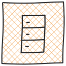
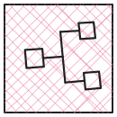
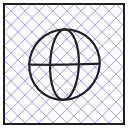
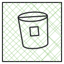
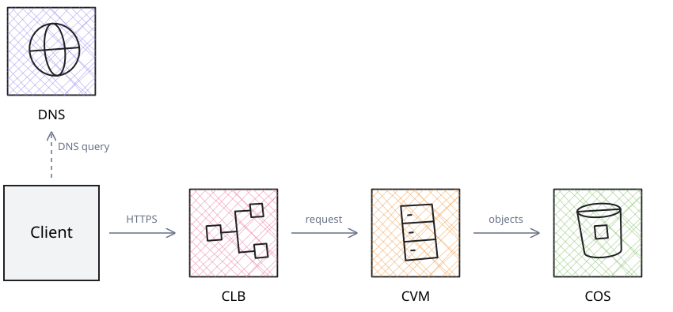

Four infrastructure tiles with exact square frames and subtly irregular inner symbols. Straight edges stay straight; circles keep their natural curves.
Perfect square frames. Irregular inner geometry. Light cross-hatching.




The client resolves DNS, sends requests through CLB to CVM, and CVM accesses COS.
